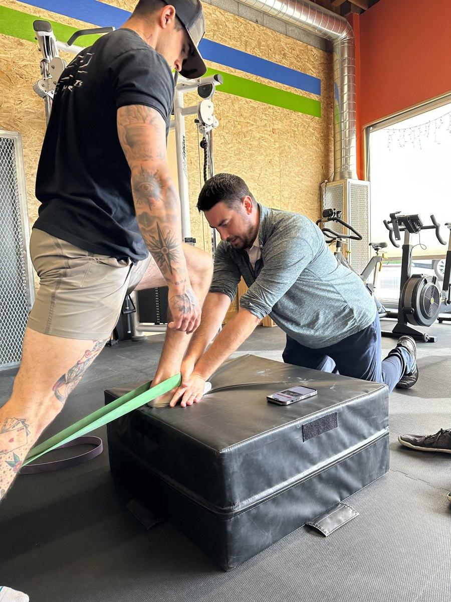

For The Athlete. For The Everyday.
More Life.
In Every Move.
A return to the field. Confidence on the stairs. A walk with someone you love. Start with what matters to you.
What Do You Want Back?

A Different Starting Point. A Personal Way Forward.01 / Back To Sport
Your Game. Your Comeback.
Recovering from a sports injury or an ACL injury? Talk with the team about your goals, your sport and where you want to go next.
Explore Sports Rehabilitation ↗The Practice Behind The Possibility
Movement Is Medicine
Get back to moving pain-free.
A Unique Physical Therapy Experience
Whether you're recovering from surgery or striving for peak performance, we're here to support you every step of the way.

Back To Your Sport.
Sports injuries, strength and the activities that drive you.
Explore Sports Rehabilitation ↗02 / Everyday IndependenceSteady Steps. Full Days.
Postoperative recovery, geriatric care and everyday movement.
Explore Everyday Confidence ↗Restore Mobility
We specialize in restoring mobility and improving pain-free movement using advanced orthopedic manual therapy techniques and tailored exercise programs. Our hands-on approach focuses on addressing the root problem for each patient.
Fitness-Forward
We believe in a personalized, fitness-forward approach to physical therapy, delivered in a one-on-one setting. Our highly trained therapists develop exercise plans tailored to each patient's unique needs and goals.


Functional Fitness Classes
In addition to individualized therapy sessions, we offer functional fitness classes designed to enhance mobility, strength, and balance. Join our 55+ fitness class at Crossfit Firefly and experience the benefits of a supportive community and expert guidance in achieving your fitness goals.
Explore Fitness & Mobility ↗Your Next Move
Let’s Start With Your Goal.
Call the office to discuss care, scheduling or coverage.